Thelio (Parts & Repairs)
Many components in your Thelio can be upgraded or replaced as necessary. This page uses photos of the R3-N1 revision, which indicates:
- R3: The third AMD motherboard used in Thelio (base size).
- N1: Based on the first revision of the nebula19 chassis.
Minor case details may vary based on the production date of the unit, but screw counts, general component locations, and other details should remain the same unless otherwise noted.
Power the machine off, switch off the power supply, and unplug all peripherals before working with any internal components. Then, follow these step-by-step guides for instructions:
- Replacing the front accent strip
- Removing the top case
- Adding/removing 2.5" storage drives
- Removing the side brace
- Replacing the bottom case fan
- Replacing the GPU
- Removing the CPU duct
- Replacing the RAM
- Replacing the M.2 drives
- Replacing the CPU fans
- Replacing the CPU cooler/thermal paste and CPU
- Replacing the power supply
- Replacing the Thelio Io board
- Replacing the SATA backplane
- Replacing the top I/O
- Troubleshooting the power button
Replacing the front accent strip:
Thelio includes a customizable accent panel on the front of the case, which can be swapped to change the case's look and feel. The instructions for swapping the accent are also available in video form.
Tools required: None
Time estimate: 30 seconds
Difficulty: Easy ●
Steps to replace the front accent strip:
- Place the Thelio on the edge of the desk so the front side is hanging off of the desk.
- The Thelio can alternatively be lifted or tilted so the front of the computer is hovering above the desk.
- Slide the accent strip down to unlock it.
- The accent can be gripped at the bottom edge.
- Pull the accent strip off of the case, starting with the bottom edge.
- Place the new accent strip onto the front of the case and slide it up to lock it into place.

Removing the top case:
The top case can be removed to access the internal components.
Tools required: Cross-head (Phillips) screwdriver (optional)
Time estimate: 1 minute
Difficulty: Easy ●
Steps to remove the top case:
- Remove the four outer screws holding the top case onto the machine.

- Slide the top case up and off of the machine.
Adding/removing 2.5" storage drives:
Thelio R3-N1 supports up to two 2.5" SATA III drives.
Tools required: Cross-head (Phillips) screwdriver (optional)
Time estimate: 5 minutes
Difficulty: Easy ●
Steps to add/remove 2.5" storage drives:
- Follow the steps above to remove the top case.
- Unscrew the two screws securing the drive bay's cover, highlighted green below.

- If you are adding a new drive, pop out the black plastic ring on the top crossbar and slide out four screws (per drive).
- Insert four screws into each 2.5" storage drive you wish to install.
- Slide each 2.5" drive into one of the slots leading to the Thelio-IO board.
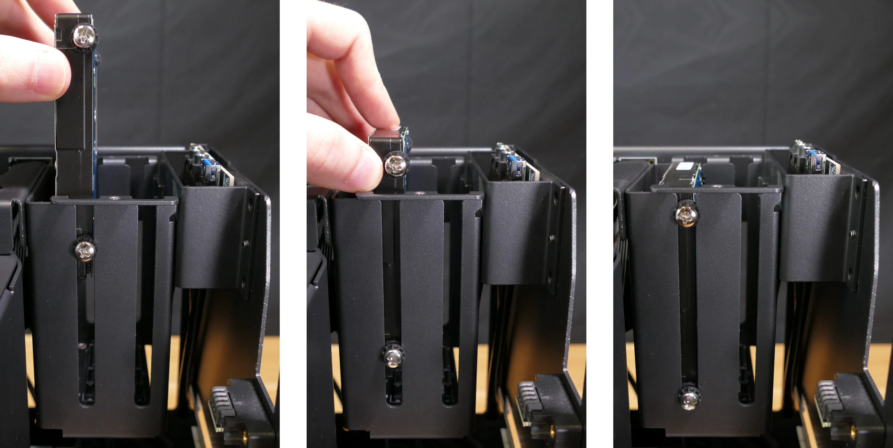

Thelio R3-N1 with one 2.5" screw ring removed and one 2.5" drive installed.
- Replace the black plastic screw ring and the 2.5" drive bay cover.
Removing the side brace:
The side brace provides a mounting point for the GPU brace finger, which helps keep GPUs or other PCI Express cards in place during shipping. It also provides mounting points for one 120mm fan, which is not offered as part of Thelio but can optionally be installed as an aftermarket upgrade.
The GPU brace finger is only required during shipping. The system can be run without this part if it does not fit an upgraded GPU.
Tools required: Cross-head (Phillips) screwdriver
Time estimate: 15 minutes
Difficulty: Easy ●
Steps to remove the side brace:
- Follow the steps above to remove the top case.
- Unscrew the four screws holding the side bracket in place (two on the front of the case, two on the back.)
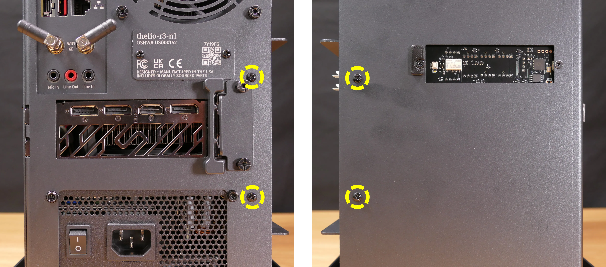
- Pull the side brace out of the chassis. Unplug the side fan connector from the splitter board on the right side, if connected.
Steps to adjust the GPU brace finger:
- Follow the steps above to remove the top case and remove the side brace.
- To adjust the GPU brace finger's horizontal position, unscrew the four corner screws (highlighted green below), move the GPU brace finger's mounting bar, and reattach it in the desired position.
- The center vertical adjustment screw (highlighted cyan below) may also need to be removed or loosened.

- To adjust the GPU brace finger's vertical position, unscrew the eight vertical adjustment screws (four on either side), move the GPU brace finger, and reattach it in the desired position.
- There may be one or two rows of screw holes on the mounting bar, depending on what GPU your system originally shipped with. The additional row of screw holes allows front-to-back adjustment of the GPU brace fingers' position.

Replacing the bottom case fan:
Thelio R3-N1 has one case-mounted 140mm intake fan on the bottom of the chassis.
Part numbers:
- The bottom case fan is a Be Quiet! Silent Wings 4 (
BQ SIW4-14025-MF-PWM).
Tools required: Cross-head (Phillips) screwdriver
Time estimate: 20 minutes
Difficulty: Medium ●
Steps to replace the bottom case fan:
- Follow the steps above to remove the top case.
- The side brace can optionally be removed to provide easier access to the fan and its cabling. In the below photos, the GPU has also been removed for greater visibility.
- Unplug the fan's cable from the Thelio Io daughterboard.
- The bottom case fan plugs into the
FANOUT2port, also known as theINTAKE FANport, on the Thelio Io board. - When viewed from interior of the chassis, this connector is on the bottom-left.
- The bottom case fan plugs into the

- Unscrew the four fan screws from the bottom of the machine.
- To avoid damaging other components, place the machine on its front side when working with the bottom surface.

- Remove the old fan from the case.
- When installing the fan, mount the components in the following order:
- Chassis
- Dust filter
- Acrylic spacer
- Fan
- The new fan's cable should be oriented towards the front-interior corner of the case. The cable is not routed through any case holes or Velcro loops by default. The cable runs back towards the power supply, then folds over and runs to the front of the case to the Thelio Io board.
Replacing the GPU:
Thelio supports one dual-slot dedicated GPU. The GPU slot is a PCIe 4.0 x16 slot.
Tools required: Cross-head (Phillips) screwdriver
Time estimate: 10 minutes
Difficulty: Medium ●
Steps to replace the GPU:
- Follow the steps above to remove the top case and remove the side brace.
- If you're removing a GPU, unplug the GPU power cable from the right side of the card. Hold down the latch on the connector while unplugging the cable.

- Unscrew the two back screws holding the PCIe bracket in place, and remove the PCIe bracket.
- The bracket must be completely removed because simply sliding it over doesn't provide enough clearance for GPU installation/removal.

- Push and hold the latch on the motherboard to free the PCIe connection, then pull the card out of the slot.
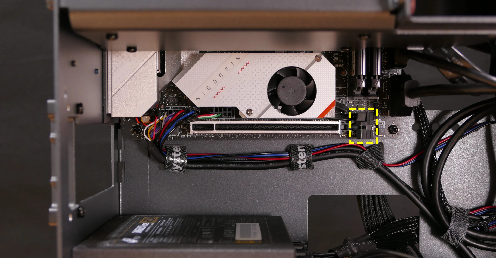
- After inserting the new GPU into its slot, connect the power cable.
- Once the GPU is installed, replace the back PCIe bracket, side brace, and top case.
Removing the CPU duct:
The CPU duct guides airflow through the CPU cooler. It covers the CPU and partially obstructs the RAM slots and top GPU.
Tools required: Cross-head (Phillips) screwdriver
Time estimate: 7 minutes
Difficulty: Easy ●
Steps to remove the CPU duct:
- Follow the steps above to remove the top case.
- Unplug both CPU fan connectors from the splitter board in the top corner of the machine.
- The splitter board provides the same signal to both ports, so it doesn't matter which fan is plugged into which port.

- Unscrew the four back thumbscrews and two top crossbar screws holding the CPU duct in place.

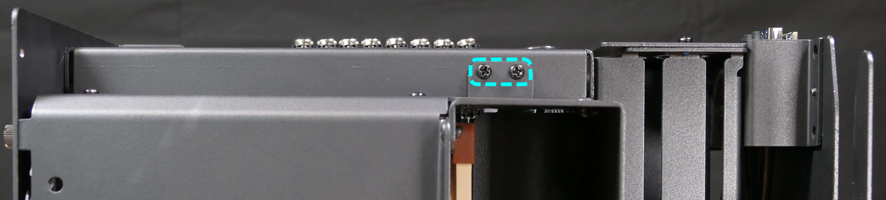
- Pull the CPU duct away from the machine.
Replacing the RAM:
Thelio R3-N1 supports up to 64GB (2x32GB) of RAM. The RAM sticks are DDR5 DIMMs (non-ECC) running at a speed of up to 4800MHz. If you've purchased new RAM, need to replace your RAM, or are reseating your RAM, follow these steps.
Tools required: Cross-head (Phillips) screwdriver
Time estimate: 15 minutes
Difficulty: Medium ●
Steps to replace the RAM:
- Follow the steps above to remove the top case and remove the CPU duct.
- The side brace does not need to be removed, but it's been removed in the below photo for better visibility.
- To remove an existing RAM stick, flip the top latch up away from the stick, then pull the stick out of the slot, starting from the top edge. (The bottom of the RAM slot does not move.)
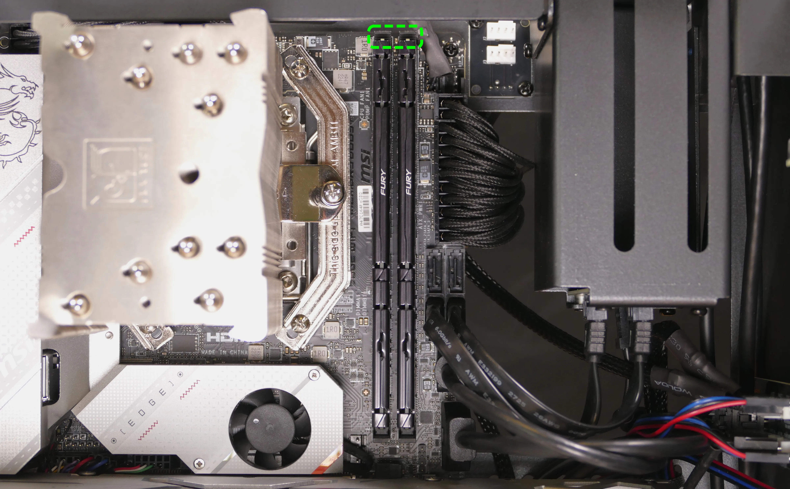
- Make sure the tab on the top of the slot is open (pulled upwards), then insert the new RAM (or re-seat the existing RAM) into the slot, starting with the bottom edge.
- The RAM stick will only fit in one direction. The larger group of pins goes on top.
- If you are only using one RAM stick, place it in the right-side slot (farthest from the CPU.)
- Replace the top case.
Replacing the M.2 drives:
Thelio R3-N1 has two M.2 slots (M key). Both slots are size 2280 and support PCIe NVMe Generation 4.
Tools required: Cross-head (Phillips) screwdriver
Time estimate: 30 minutes
Difficulty: Medium ●
Steps to replace the M.2 drive (slot 1):
- Follow the steps above to remove the top case, remove the side brace, remove the GPU, and remove the CPU duct.
- Removing the CPU duct and GPU is optional but recommended to provide more working space and avoid damage.
- Unscrew and remove the M.2 heatsink.
- It may take some pressure to remove the heatsink and thermal tape from the M.2 drive. After unscrewing the heatsink, pull slowly to avoid breaking the thermal tape.
- The heatsink fan is connected to the motherboard. This connector does not need to be unplugged to access the M.2 slot.

- Unscrew the retainer screw opposite the M.2 slot.
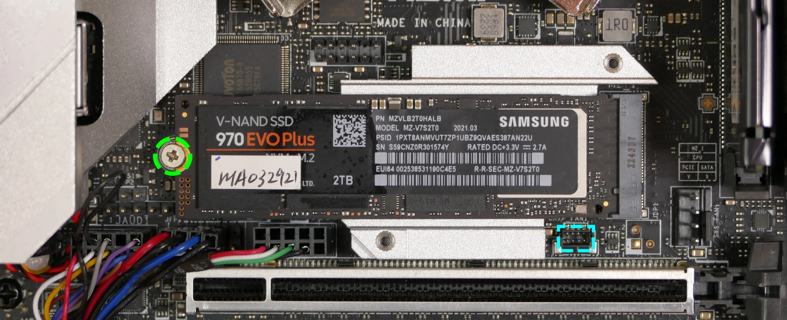
- Insert the new M.2 drive into the slot and hold it in place.
- Replace the retainer screw.
- Replace the M.2 heatsink, CPU duct, GPU, side brace, and top case.
- When replacing the M.2 heatsink, ensure its fan is plugged into the M.2 fan connector (highlighted cyan above).
Steps to replace the M.2 drive (slot 2):
- Follow the steps above to remove the top case.
- Unscrew the retainer screw opposite the M.2 slot.

- Remove the existing M.2 drive by pulling it out of the slot.
- Insert the new M.2 drive into the slot and hold it in place.
- Replace the retainer screw.
Replacing the CPU fans:
Thelio R3-N1 contains two 92mm CPU fans, both mounted on the CPU duct.
Part numbers:
- The front fan is a Noctua
NF-A9 PWM. - The back fan is a Be Quiet! Pure Wings 2 (
BQ PUW2-9225-MR-PWM).
Tools required: Cross-head (Phillips) screwdriver
Time estimate: 25 minutes
Difficulty: Medium ●
Steps to replace the CPU fans:
- Follow the steps above to remove the top case and remove the CPU duct.
- Unscrew the four screws (two on each side) holding the fan bracket onto the duct.
- In the photos below, the front fan bracket's screws are highligted cyan, and the back fan bracket's screws are highlighted green.
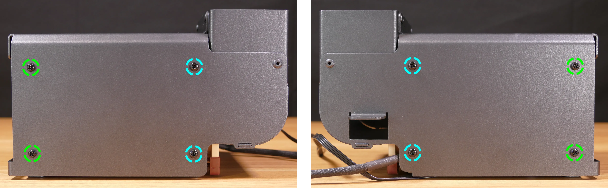
- Unscrew the four screws holding the fan onto the fan bracket.

- When reinstalling the fan into the CPU duct, the spinning side should face towards the front of the case, and the cable should point towards the top corner of the open side of the duct.
- Overtightening a fan's screws may cause fan noise; if a fan is creating excessive noise, try slightly loosening some of the screws.
Replacing the CPU cooler and CPU:
The CPU cooler dissipates heat from the CPU to the heatsink, where the CPU fans expel it from the system. Depending on your climate and the age of the machine, replacing the thermal paste between the CPU and the cooler/heatsink may help the system run cooler.
Part numbers:
- The CPU cooler is a Noctua
NH-U9S. - The CPU uses an AMD AM5 socket.
Tools required: Cross-head (Phillips) screwdriver, thermal paste
Time estimate: 45 minutes
Difficulty: High ●
Steps to remove the CPU cooler/thermal paste:
- Follow the steps above to remove the top case, remove the side brace, remove the GPU, and remove the CPU duct.
- While holding the CPU cooler in place so it doesn't fall, unscrew the two screws holding the CPU cooler crossbar onto the vertical mounting brackets.
- The screws are held captive, and will not fully come out of the crossbar.
- Only the two outer screws need to be removed; the center screw holding the horizontal crossbar onto the heatsink does not need to be removed.
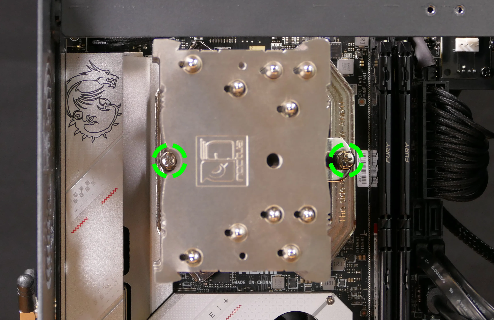
- The cooler will come away from the CPU.
- Using a paper towel, clean the existing thermal paste off of the heatsink and CPU. You may also use a small amount of rubbing alcohol if the old paste is dried or difficult to remove.

Steps to replace the CPU:
- Place the computer on its side so the motherboard is facing up.
- Unscrew and remove the cooler mounting bracket on the right side of the CPU.
- The grey plastic spacers over each mounting bracket screw hole do not need to be removed. If they fall off, put them back before reinstalling the mounting bracket.
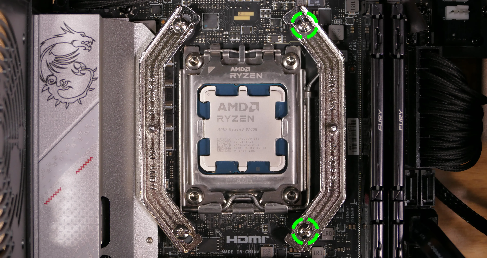
- Push the locking pin outward until it's able to spring away from the motherboard.
- Caution: the locking pin may spring up with significant force when freed.
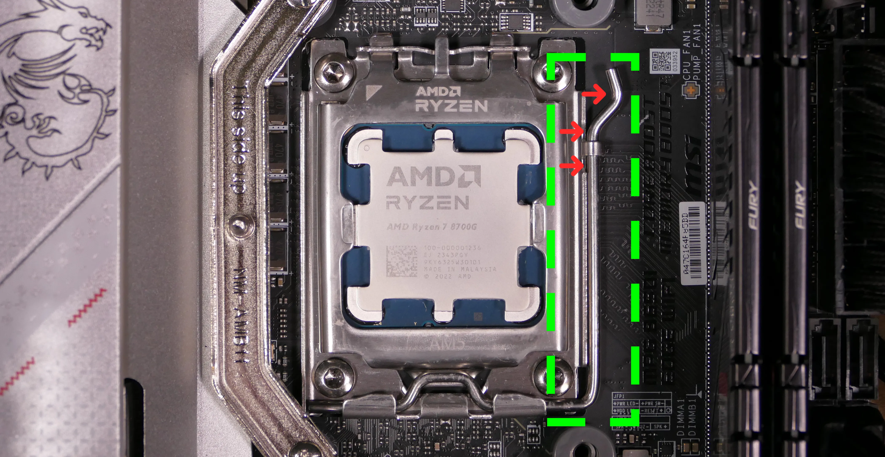
- Flip the CPU holder away from the CPU.
- The CPU holder opens in the opposite direction from the locking pin.
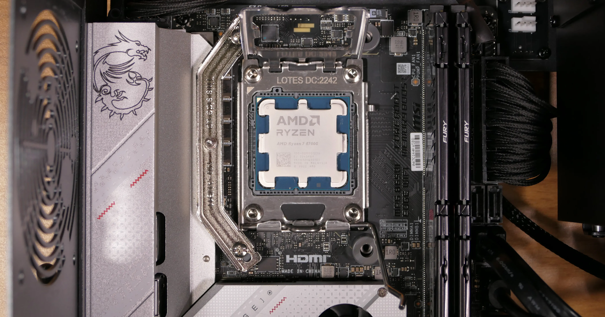
- Carefully lift the CPU out of the CPU socket.
- Be careful not to bend any of the gold pins on the CPU socket, and do not touch the gold pads on the CPU.

- Gently place the new CPU into the socket.
- When reinstalling the CPU, be sure to match the original orientation, with the triangle on the CPU pointing to the top left of the motherboard.
- The triangle on the CPU should match the triangle on the top of the CPU cover.
- Flip the CPU cover back onto the CPU and push the locking pin down into place.
- Reinstall the right-side cooler mounting bracket.
Steps to install the thermal paste/CPU cooler:
- Draw an
Xshape of thermal paste onto the CPU.
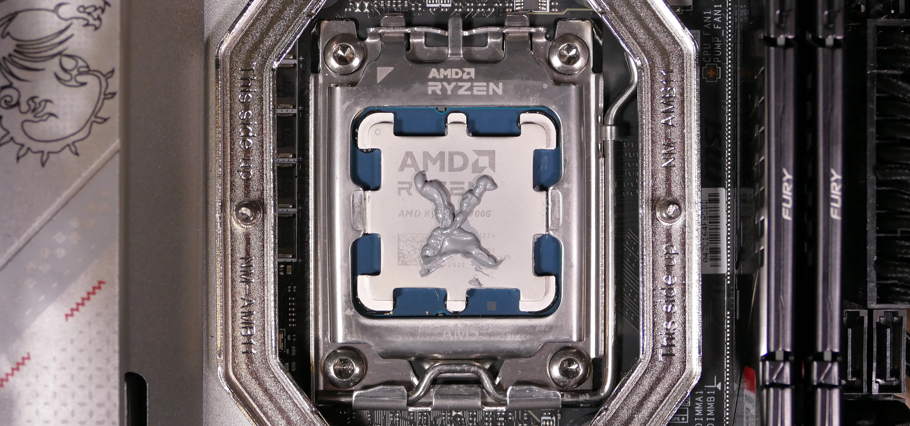
- Place the CPU cooler onto the CPU; while holding it in place, screw each end of the cooler crossbar onto one of the mounting brackets.
- The cooler should be oriented so the hole in the vertical center of the heatsink is facing the right side (front of the case).
- Insert each screw partially first, then fully tighten both.
- Set the computer upright, then reinstall the cooler-mounted CPU fan, CPU duct, GPU bracket, and top case.
Replacing the power supply:
The power supply unit (PSU) is modular and can be replaced with another unit of the same model. Different models may not be compatible with the cabling pre-installed in the Thelio.
Part numbers:
- The PSU is an FSP Dagger Pro 650W (
SDA2-650).
Tools required: Cross-head (Phillips) screwdriver
Time estimate: 20 minutes
Difficulty: Medium ●
Steps to replace the power supply:
- Follow the steps above to remove the top case, remove the side brace, and remove the GPU.
- Unplug all of the modular cabling from the back of the PSU.
- Some of the cables may be easier to unplug after the PSU has been unscrewed/removed from the case.
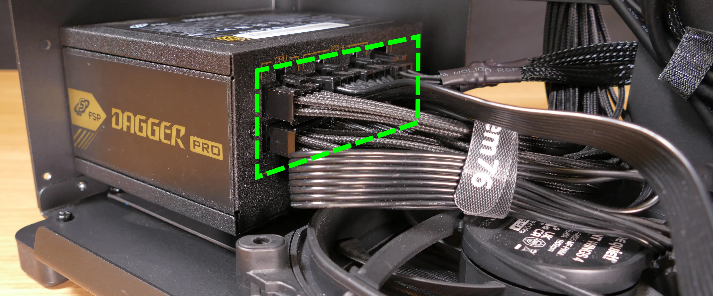
- Unscrew the four screws holding the PSU in from the back of the case.

- Remove/replace the PSU.
- The replacement PSU should be installed with the fan facing the bottom of the case.
- The PSU will need to be held up to the back of the case while it is screwed in.
- After screwing in the replacement PSU, use the labels and pin counts on the cables and ports to ensure the power cables are reconnected in the proper locations.
- Remember that not all of the available connectors will plug into the PSU-- the 8-pin (6 + 1) connector is to be plugged into the GPU.
Steps to clean the power supply dust filter:
- Follow the steps above to remove the power supply.
- Unscrew the four screws holding the dust filter onto the chassis.
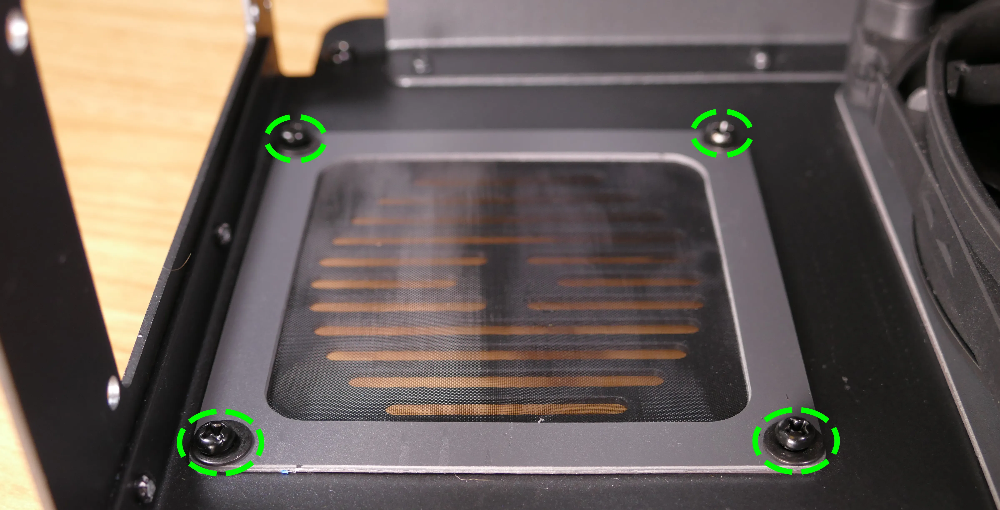
- Remove the dust filter and clean it with compressed air, running water, or a damp cloth.
- When the filter is clean and dry, reinstall the filter, then reinstall the power supply and
Replacing the Thelio Io board:
Named after Jupiter's moon Io, the Thelio Io daughterboard handles the front power button and fan control. If the Thelio Io board becomes defective, it can be replaced using the instructions below.
Part numbers:
- Thelio R3-N1 uses Thelio Io version 2 (PCB revision thelio-io_2.3).
Tools required: Cross-head (Phillips) screwdriver
Time estimate: 25 minutes
Difficulty: High ●
Steps to replace the Thelio Io board:
- Follow the steps above to remove the top case.
- For easier access, it's also recommended to remove the side brace, remove the CPU duct, and remove the GPU.
- Unplug all cabling from the Thelio-IO board.
- The
POWER INPUT/POWER1connector requires pulling the white tab while unplugging.
- The
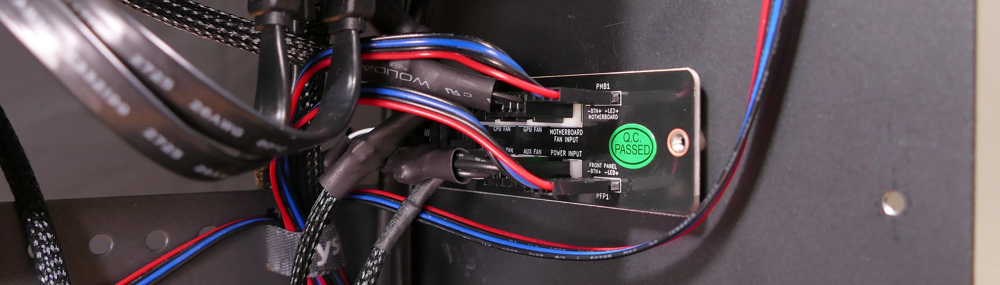
- Unscrew the two screws holding the daughterboard on from the front of the chassis.
- The plastic spacer behind the left screw will come off when the screw is removed. Hold it in place when screwing in the new board.
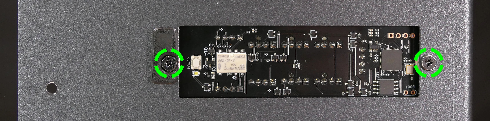
- Screw in the new Thelio Io board and reconnect the wiring.
Thelio Io wiring guide:

-
When wiring the Thelio Io board, refer to the port labels and the following guide.
FANOUT1/CPU FAN- to the CPU fan splitter.FANOUT4/AUX FAN- not connected.FANOUT2/INTAKE FAN- to the bottom case fan.FANOUT3/GPU FAN- to the side brace fan splitter (disconnected by default).FANIN1/MOTHERBOARD FAN INPUT- to theCPU_FAN1header at the top right of the motherboard, highlighted green below.
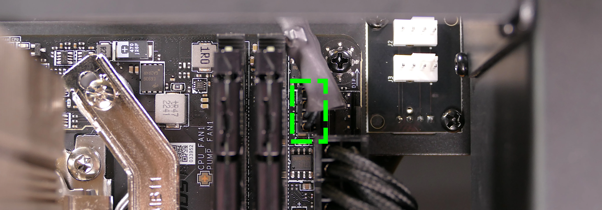
POWER1/POWER INPUT- to the power supply.- The white plastic backing needs to be held away from the connector to unplug this cable from the Thelio Io board.
PFP1/FRONT PANEL- to the power button receptacle on the front panel.- On the Thelio Io board, the wire color order (from top to bottom) is red, black, blue, black.
- On the power button receptacle, the wire color order (from left to right) is red, black, blue, black.
PMB1/MOTHERBOARD- to theJFP1header at the bottom left of the motherboard, highlighted cyan below.- On the Thelio Io board, the wire color order (from top to bottom) is red, black, blue, black.
- On the motherboard, the wire color order (from left to right) is red, black, blue, black.
USB- to theUSB_3_4header at the bottom left of the motherboard, highlighted yellow below.- A small clip needs to be held down to unplug this cable from the Thelio Io board.
- This port can alternatively be connected to the
USB_5_6header if theUSB_3_4header is connected to the wireless card.

Replacing the SATA backplane:
The SATA backplane provides two 2.5" SATA data and power connectors for the 2.5" drive cage.
Part numbers:
- The part number and version for the SATA backplane is thelio-io-sata_2.2.
Tools required: Cross-head (Phillips) screwdriver
Time estimate: 30 minutes
Difficulty: Medium ●
Steps to replace the SATA backplane:
- Follow the steps above to remove the top case, then remove the 2.5" drive cage cover and all 2.5" SATA drives.
- Use the cutout on the front right corner of the chassis to unplug the 4-pin Berg power connector and the two SATA data cables from the SATA backplane.

- Unscrew the two outer flat screws holding the top crossbar onto the front of the chassis.

- Unscrew the two back screws holding the top crossbar onto the back of the chassis.
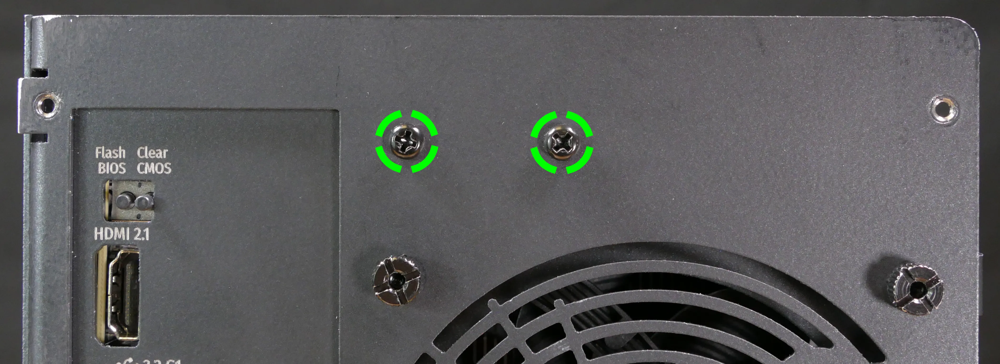
- Unscrew the two screws holding the CPU duct onto the top crossbar.
- Lift the top crossbar up and out of the chassis.
- Unscrew the four SATA backplane screws from the drive cage, then push the SATA backplane out through the top of the drive cage.
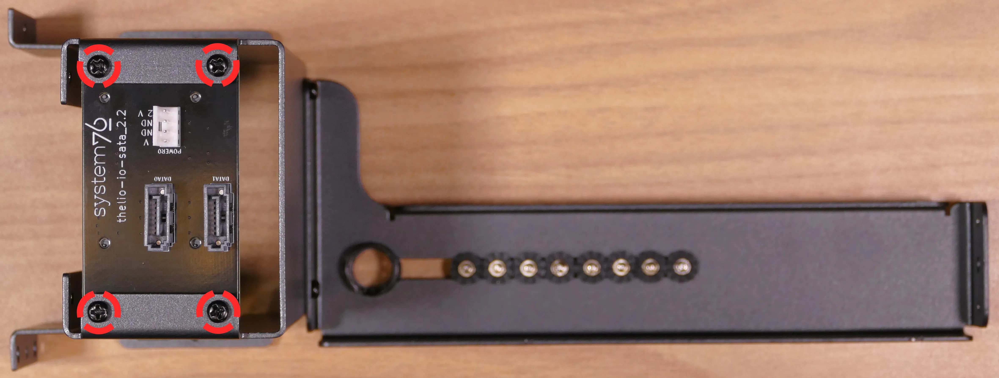
- Place the new SATA backplane into the drive cage and secure it with the four SATA backplane screws, then reinstall the drive cage (if necessary).
- Plug the 4-pin Berg power connector and SATA data cables into the SATA backplane.
- The order of the SATA data cables shouldn't matter as long as your operating system and software is configured to address disks by UUID (e.g.
/dev/disk/by-id/...) instead of by letter (e.g./dev/sd_). - By default, the
DATA1port connects to the innermost SATA connector on the motherboard, and theDATA0port connects to the outermost SATA connector on the motherboard.
- The order of the SATA data cables shouldn't matter as long as your operating system and software is configured to address disks by UUID (e.g.
- Reinstall the CPU shroud (if necessary), any 2.5" drives that were removed, the 2.5" drive cage cover, and the top case.
Replacing the top I/O:
Thelio Spark B1-N2 includes a top I/O module providing audio and USB ports. If the top ports are damanged or become defective, they can be replaced using the steps below.
Part numbers:
- The top I/O module's part number is
MYS7523 Rev. 4.0.
Tools required: Cross-head (Phillips) screwdriver
Time estimate: 30 minutes
Difficulty: Medium ●
Steps to replace the top I/O:
- Follow the steps above to remove the top case, remove the side brace, and remove the GPU.
- Unplug the
JAUD1header at the bottom-left corner of the motherboard.

- Unplug the
JUSB1header (highlighted cyan below) andJUSB2header (highlighted green below) along the right edge of the motherboard.- The
JUSB1header is behind the CPU duct, but it can be unplugged without removing the duct. The duct has been removed for greater visibility in the below photo.
- The

- Unscrew the two front screws holding the top I/O board onto the chassis.
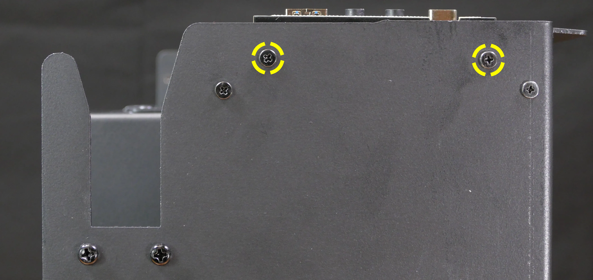
- Remove the top I/O board from the system.
- Insert the new top I/O board into the system and screw it into place.
- Reconnect the audio and USB headers.
- Replace the side brace (if necessary), CPU shroud, and top case.
Troubleshooting the power button:
If the front power button doesn't power the machine on or doesn't light up when the system is powered on, try the following troubleshooting steps:
- Check if internal Thelio Io power button and LED work.
- Reseat the front power button to ensure it's making proper contact.
- Check the wiring for the front power button.
- Replace the front power button, if necessary.
Tools required: Cross-head (Phillips) screwdriver (optional)
Time estimate: 20 minutes
Difficulty: Medium ●
Steps to power the machine on using the internal power button:
- Follow the steps above to remove the top case.
- Ensure the system is plugged into power, and the power supply switch is in the 1 (On) position.
- Push the small button labeled
POWERon the Thelio-IO board.- The white LED below the button lights up to indicate when the system is powered on (and pulses when the system is suspended).
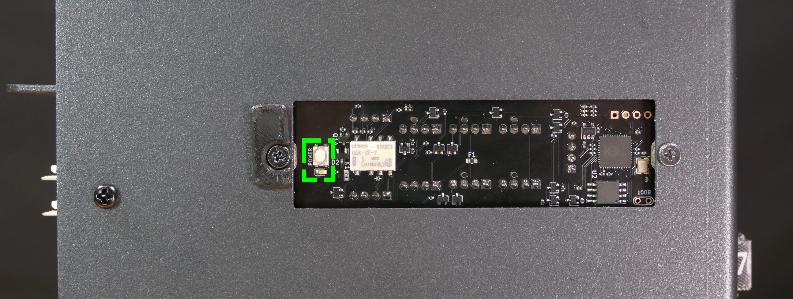
- If the Thelio-IO
POWERbutton powers the machine on and the LED lights up, then the issue is either the front power button or its connection to the Thelio-IO board. Check the front power button wiring. - If the Thelio-IO
POWERbutton and/or LED does not work, then the issue is either the Thelio-IO board or its connection to the motherboard. Check the wiring between the Thelio-IO board and the motherboard.
Steps to check the front power button wiring:
- Follow the steps above to remove the top case.
- On the back of the power button, the four pins should be connected to the four-wire connector as follows:

- On the front power button receptacle, the four-pin connector should have the red wire on the left and the black wire on the right (when viewed from the back of the computer.)
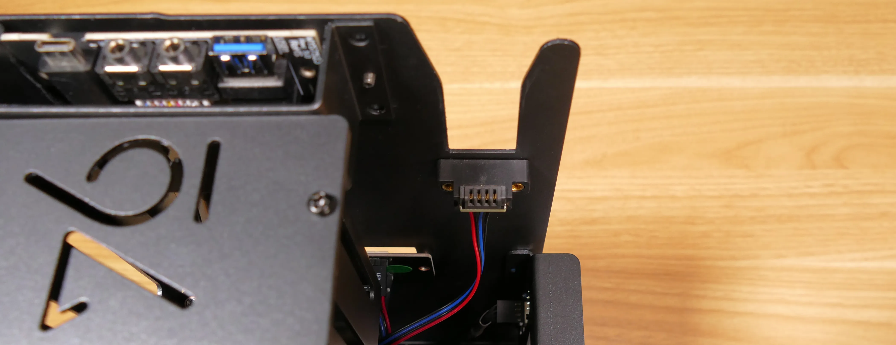
- The front power button receptacle should plug into the
PFPDport on the Thelio-IO board, with the red wire on the top (see the Thelio-IO wiring guide.)
Steps to replace the power button:
- Follow the steps above to remove the top case.
- Follow the instructions in the Replace the Thelio Power Button support article.